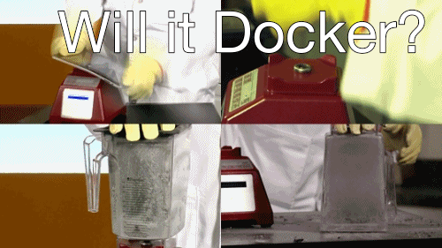

Factorish: The Twelve-Fakter App
http://factorish.github.io/factorish

http://www.tofurky.com/
Created by Paul Czarkowski / @pczarkowski
Who am I

Cloud Engineer @ Bluebox
Bluebox
Shameless Plug
Factorish: The Twelve-Fakter App
The Twelve-Factor App
12factor.net

http://www.foodbeast.com/news/move-over-horsemeat-unicorn-cuts-are-all-the-rage/
The Twelve-Factor App
12factor.net
A methodology for building modern web apps that:
- Use declarative formats for setup automation
- Have a clean contract with the underlying operating system
- Are suitable for deployment on modern cloud platforms
- Minimize divergence between development and production
- And can scale up without significant changes
The Twelve-Factor App
Dockerized

http://www.thinkgeek.com/product/e5a7/?srp=2
Your App


Your App
A decade old application that sort of still runs.
- Runs on servers that are lovingly hand crafted.
- Is written in a outdated language with poor dependency resolution.
- Runs under a web server like Apache or Tomcat.
- Looks different in Development and Production (and all the other steps).
The Twelve-Fakter App
Dockerized

http://tastyislandhawaii.com/2007/12/07/tulip-vs-treet-vs-spam-musubi-showdown/
The Container is your app
The Twelve-Fakter App
But Why ?
- You want to modernize your application.
- You probably can't fix the app.
- No time to rewrite the app.
Fakter I. Codebase
One codebase tracked in revision control, many deploys
- Use Source control ( GIT! )
- Add these to your app (or make them your app)
- Dockerfile / .dockerignore
- Vagrantfile
- Deploy scripts
- https://github.com/paulczar/factorish
Fakter II. Dependencies
Explicitly declare and isolate dependencies
- Declaration: Dockerfile
- Isolation: `docker build`
Fakter II. Dependencies
# Dockerfile: factorish/example
FROM python:2
MAINTAINER Paul Czarkowski "paul@paulcz.net"
RUN \
apt-get update && apt-get install -yq
supervisor \
RUN \
curl -sSL -o /usr/local/bin/etcdctl https://s3-us-west-2.amazonaws.com/opdemand/etcdctl-v0.4.6 && chmod +x /usr/local/bin/etcdctl \
&& curl -sSL -o /usr/local/bin/confd https://github.com/kelseyhightower/confd/releases/download/v0.7.1/confd-0.7.1-linux-amd64 && chmod +x /usr/local/bin/confd
ADD . /app
WORKDIR /app
RUN \
useradd -d /app -c 'application' -s '/bin/false' app && \
chmod +x /app/bin/* && \
pip install -r /app/example/requirements.txt
CMD ["/app/bin/boot"]
EXPOSE 8080
Fakter III. Configuration
Store config in the environment
Again, Easy wins with Docker
- `docker run -e TEXT=bacon myapp`
- Confd - {{ getv "/text" }}
- `sed -i "s/xxxTEXTxxx/${TEXT}" /etc/config.conf`
Fakter III. Configuration
/app/conf.d/example.conf.toml
[template]
src = "example.conf"
dest = "/app/example/example.conf"
owner = "app"
group = "app"
mode = "0644"
keys = [
"/services/example",
]
check_cmd = "/app/bin/check {{ .src }}"
reload_cmd = "supervisorctl restart example"
/app/templates/example.conf
[example]
text: {{ getv "/services/example/text" }}
{{ }} - golang/confd macro syntax.
Fakter IV. Backing Services
Treat backing services as attached resources
- Make no distinction between local and third party services.
- use ENV to configure.
- Fairly simple to manage for databases etc.
- disk persistence is the hard one.
- Docker: volume mounts*, data containers, flocker
- Remote Storage: netapp, nfs, fuse-s3fs
- Clustered FS: drdb, gluster
- Ghetto: rsync
* security implications.
Fakter IV. Backing Services
/app/templates/wp-config.php
/** The name of the database for WordPress */
define('DB_NAME', '{{ getv "db/name" }}');
/** MySQL database username */
define('DB_USER', '{{ getv "db/user" }}');
/** MySQL database password */
define('DB_PASSWORD', '{{ getv "db/pass" }}');
/** MySQL hostname */
define('DB_HOST', '{{ getv "db/host" }}');
Docker Run command
$ docker run -d -e DB_NAME=wordpress -e DB_USER=wordpress \
-e DB_PASSWORD=wordpress $DB_HOST=my.database.com \
-v /mnt/nfs/wordpress:/app/wordpress factorish/wordpress
Fakter V. Build, release, run
Strictly separate build, release and run stages
- Build: `docker build -t myapp:base .`
- Release: `docker build -t myapp:v1.3.2 .`
- Run: `docker run -d myapp:v1.3.2`
- Release/Run: `docker run -d -e TEXT=bacon myapp:base`
Fakter VI. Processes
Execute the app as one or more stateless processes
- Applications should be treated as stateless processes.
- All data that needs to be persisted should be done via backing services.
- example: `session` data stored in redis or memcache.
Fakter VII. Port binding
Export services via port binding
- Use a language specific webserver library like `jetty` for java if possible.
- Usually relying on an external webserver (ex. nginx for php) is a violation of 12factor.
- Port Binding: EXPOSE in Dockerfile, or $ docker run -p 8080:8080.
- any app can be used as a backing app for another app.
Fakter VIII. Concurrency
Scale out via the process model
- assign each type of work to a process type ( container! )
- Your application should not daemonize or write pid files.
- if it does, you may be able to script around it.
- Apps like nginx and apache can be run in foreground.
- Utilize tools like runit or supervisord to handle process management.
- Horizonal vs Vertical scaling.
Fakter IX. Disposability
Maximize robustness with fast startup and graceful shutdown
- Otimize to minimize startup ( Docker helps with this! )
- Graceful shutdown ( Finish current reqs or give back to a queue )
- Sudden Death ( minimal impact on crash. Smart LB can help? )
X. Dev/prod parity
Keep development, staging, and production as similar as possible
You've already done most of the work to achieve this:
- Use Vagrant or Docker Compose to deploy your app and backing services in dev environment using appropriate provisioners.
- Docker helps reduce time to go from dev to prod with portable/immutable artifacts.
- by deploying all envs with same tooling, every dev rebuilt is a test of prod deploy tooling.
- Actions to deploy to prod should be very similar to deploy to dev.
XI. Logs
Treat logs as event streams
- Never write to a log file always to stdout ( /dev/stdout /dev/stderr are your friends)
- If you have to write to a log file, you're violating several rules and will have to try to script around it (or use a remote file backing service) so that long running containers do not run out of disk space.
- By writing to stdout, docker log subsystem sees the logs, and then tooling like ``logspout` can utilize to forward stream to central location.
XII. Admin processes
Run admin/management tasks as one-off processes
Docker
- docker run -t -e TEXT=bacon myapp:1.3.2 rake db:migrate or
- docker exec -t vibrating_descartes rake db:migrate